ePrescription administrators can perform the tasks described in this section.
ePrescription administrators will typically be assigning the eRx Admin and eRx Prescriber roles. A user can be assigned either or both of these roles. The tasks users with these roles can perform are listed in the Security and Roles FAQs in this document.
Important: The Cority client must purchase a license for each user who will be assigned the
eRx Prescriber role. When an attempt is made to assign the role to one or more users, the system checks that the requisite number of licenses is available. If not, a warning is generated. With the eRx Prescriber role, a user will have access to the extensive drug database, and will be able to prescribe medications electronically if the following fields on the User record are populated with valid information: First Name, Last Name, and NPI Number. If any of those fields are not populated with valid information when an attempt is made to register a user’s linked health center with Surescripts, a warning is generated. For users who will be prescribing controlled substances electronically, a valid DEA number and complete home address are also required.
You assign a role to a Cority user’s profile either by assigning the role to a group of users at the same time or by assigning the role to a single user.
To assign a role to a group of users at the same time:
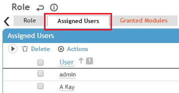
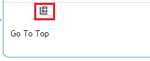
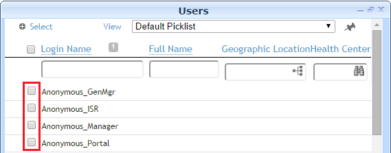
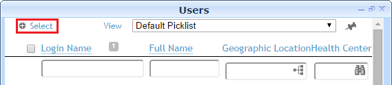
There are two ways in which to assign a role to an individual user.
To assign a role to an individual user on the User layout:
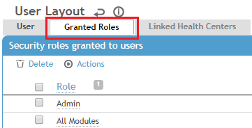
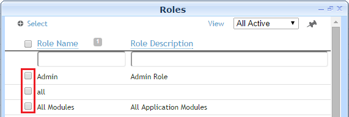
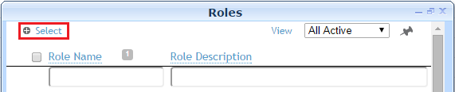
To be able to prescribe electronically and use other ePrescription functionality, an ePrescriber must be registered with Surescripts at least one health center.
The following three steps are required to register an ePrescriber with Surescripts:
Important: When assigning a user to a Health Center for ePrescribing, the Health Center description cannot be more than 35 characters. Cority allows descriptions to be up to 100 characters, however for ePrescribing the description cannot be greater than 35 characters.
Note: To set up an ePrescriber to be able to prescribe electronically from more than one health center, simply repeat the following three procedures for each health center.
To assign a user to a health center:
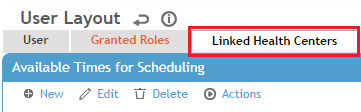
To register a user with Surescripts (for ePrescription) at a health center:
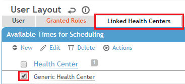
Note: The procedure above registers the specific ePrescriber with Surescripts at a health center. It does not register any other users linked to the same health center with Surescripts. Each ePrescriber must be individually registered with Surescripts for each health center location from which he or she will be ePrescribing.
To configure the Default Health Center system setting:
Important: If an ePrescriber works at multiple health centers, the prescriber needs to ensure that the default health center is set correctly, particularly if he or she is registered for ePrescription at multiple health centers.
You can temporarily deactivate one or more of an ePrescriber’s service levels at a health center. Once deactivated, the ePrescriber will no longer have the ability provided by the service level at that health center, but will still be counted as an eRx license in Cority. The ePrescriber will not lose his or her Surescripts Prescriber ID (SPI #).
Note: You might want to deactivate an ePrescriber’s service levels at a health center if, for example, the ePrescriber is going to have a prolonged absence or is temporarily re-assigned to a different health center. Unregistering an ePrescriber from Surescripts at a Health Center, which is described later in this guide, serves a different purpose.
To deactivate one or more of an ePrescriber’s service levels at a health center:
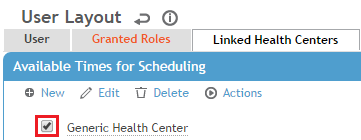
To reactivate one or more of an ePrescriber’s service levels at a health center:
If you unregister an ePrescriber from Surescripts at a health center, the prescriber will lose all service levels (for example: New Rx, Refill, Cancel, etc.) he or she was granted at that health center. The ePrescriber will lose his or her Surescripts Prescriber ID (SPI) for that health center, but retain the assigned SPI Root #. The user will still be counted as an eRx license.
To unregister an ePrescriber from Surescripts at a health center:
Note: When you unregister an ePrescriber from Surescripts at a health center location, the SPI root # for the user is retained and therefore the ePrescriber is not removed from Surescripts completely.
ePrescription administrators will typically be removing the eRx Admin and eRx Prescriber roles. You remove a role from a user’s profile by either by removing the role from a group of users at the same time or by removing the role from a single user.
To remove a role from a group of users at the same time:
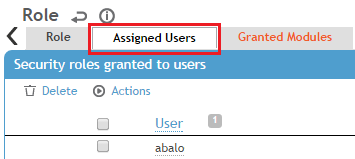
There are two ways in which to remove a role from an individual user.
To remove a role from an individual user on the User layout:
The eRx Employee Medication layout is designed to make the workflow intuitive and to ensure that an ePrescriber provides all of the information Surescripts requires for the electronic transmission of a prescription. Therefore, we strongly advise that you do not customize the eRx Employee Medication layout.
For information on how to customize other standard Cority layouts, see the Cority User Guide.
ePrescription administrator (or Surescripts Directory Service) transactions are logged in the eRx Admin log, which can be accessed by navigating to Administrator > Logs.